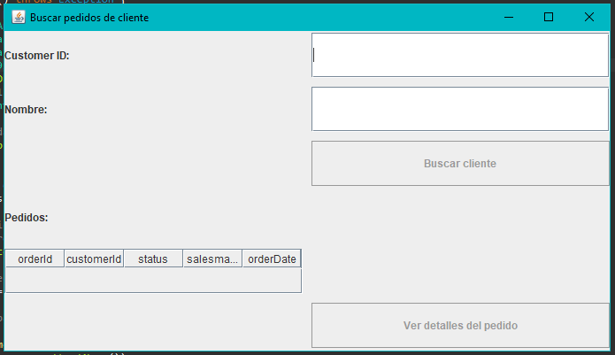

⬅ Volver al índice
Ver siguiente ejercicio ➡️
Ejercicio 4 - Buscar Pedidos de Cliente
📌 ¿Para qué sirve?
Este ejercicio permite al usuario buscar un cliente por su ID o nombre, y
consultar los pedidos que tenga registrados en la base de datos.

🧭 ¿Cómo se utiliza?
-
Desde la ventana principal, haz clic en "Buscar pedidos Cliente y ver
detalles".
-
En la nueva ventana, introduce el ID o el
nombre del cliente.
- Pulsa el botón "Buscar cliente".
-
En la parte inferior aparecerá una tabla con los pedidos realizados por
ese cliente (si tiene).
-
También puedes seleccionar un pedido y hacer clic en
"Ver detalles del pedido" (opcional, si se implementa).

📋 ¿Qué información se muestra?
En la tabla de resultados se pueden ver los siguientes datos de cada
pedido:
- ID del pedido
- ID del cliente
- Estado del pedido
- ID del comercial (salesman)
- Fecha del pedido
✅ ¿Qué pasa si no se encuentra el cliente?
Si no hay ningún cliente que coincida con el nombre o ID introducido, se
muestra un mensaje avisando al usuario.
✅ ¿Y si el cliente no tiene pedidos?
Si el cliente existe pero no tiene pedidos registrados, también se informa
con un mensaje.

🎯 Resultado final
Esta funcionalidad permite consultar de manera sencilla los pedidos de
cualquier cliente, útil para revisar su historial comercial o comprobar su
actividad reciente.